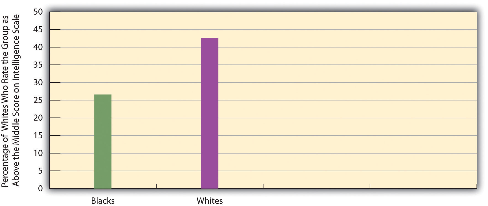
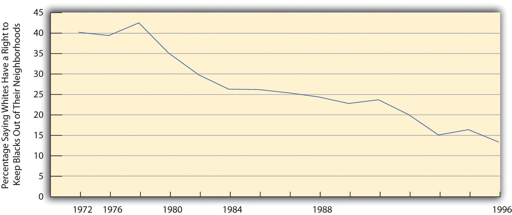
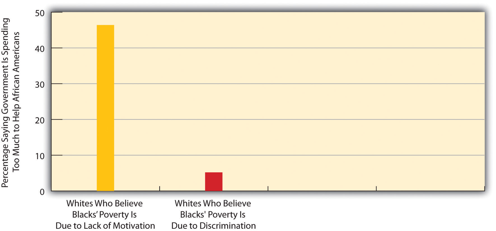

Let’s examine racial and ethnic prejudice further and then turn to discrimination in Chapter 10 "Race and Ethnicity", Section 10.4 "Discrimination". Prejudice and discrimination are often confused, but the basic difference between them is this: prejudice is the attitude, while discrimination is the behavior. More specifically, racial and ethnic prejudiceA set of negative attitudes, beliefs, and judgments about whole categories of people, and about individual members of those categories, because of their perceived race and/or ethnicity. refers to a set of negative attitudes, beliefs, and judgments about whole categories of people, and about individual members of those categories, because of their perceived race and/or ethnicity. A closely related concept is racismThe belief that certain racial or ethnic groups are inferior to one’s own., or the belief that certain racial or ethnic groups are inferior to one’s own. Prejudice and racism are often based on racial and ethnic stereotypesSimplified, mistaken generalizations about people because of their race and/or ethnicity., or simplified, mistaken generalizations about people because of their race and/or ethnicity. While cultural and other differences do exist among the various American racial and ethnic groups, many of the views we have of such groups are unfounded and hence are stereotypes. An example of the stereotypes that white people have of other groups appears in Figure 10.2 "Perceptions by Non-Latino White Respondents of the Intelligence of White and Black Americans", in which white respondents in the General Social Survey (GSS) are less likely to think blacks are intelligent than they are to think whites are intelligent.
Figure 10.2 Perceptions by Non-Latino White Respondents of the Intelligence of White and Black Americans
Source: Data from General Social Survey, 2008.
Where do racial and ethnic prejudices come from? Why are some people more prejudiced than others? Scholars have tried to answer these questions at least since the 1940s, when the horrors of Nazism were still fresh in people’s minds. Theories of prejudice fall into two camps, social-psychological and sociological. We will look at social-psychological explanations first and then turn to sociological explanations. We will also discuss distorted mass media treatment of various racial and ethnic groups.
One of the first social-psychological explanations of prejudice centered on the authoritarian personalityA personality emphasizing such things as obedience to authority, a rigid adherence to rules, and low acceptance of people not like oneself and said to help account for racial and ethnic prejudice. (Adorno, Frenkel-Brunswick, Levinson, & Sanford, 1950).Adorno, T. W., Frenkel-Brunswick, E., Levinson, D. J., & Sanford, R. N. (1950). The authoritarian personality. New York, NY: Harper. According to this view, authoritarian personalities develop in childhood in response to parents who practice harsh discipline. Individuals with authoritarian personalities emphasize such things as obedience to authority, a rigid adherence to rules, and low acceptance of people (out-groups) not like oneself. Many studies find strong racial and ethnic prejudice among such individuals (Sibley & Duckitt, 2008).Sibley, C. G., & Duckitt, J. (2008). Personality and prejudice: A meta-analysis and theoretical review. Personality and Social Psychology Review, 12, 248–279. But whether their prejudice stems from their authoritarian personalities or instead from the fact that their parents were probably prejudiced themselves remains an important question.
Another early and still popular social-psychological explanation is called frustration or scapegoat theoryAs an explanation of racial and ethnic prejudice, the view that individuals blame the problems they experience on racial and ethnic minorities and thus scapegoat them instead of recognizing the real sources of their own misfortunes. (Dollard, Doob, Miller, Mowrer, & Sears, 1939).Dollard, J., Doob, L. W., Miller, N. E., Mowrer, O. H., & Sears, R. R. (1939). Frustration and aggression. New Haven, CT: Yale University Press. In this view individuals who experience various kinds of problems become frustrated and tend to blame their troubles on groups that are often disliked in the real world (e.g., racial, ethnic, and religious minorities). These minorities are thus scapegoats for the real sources of people’s misfortunes. Several psychology experiments find that when people are frustrated, they indeed become more prejudiced. In one early experiment, college students who were purposely not given enough time to solve a puzzle were more prejudiced after the experiment than before it (Cowen, Landes, & Schaet, 1959).Cowen, E. L., Landes, J., & Schaet, D. E. (1959). The effects of mild frustration on the expression of prejudiced attitudes. Journal of Abnormal and Social Psychology, 64, 33–38.
In the real world, scapegoating at a mass level has been quite common. In medieval Europe, Jews were commonly blamed and persecuted when economic conditions were bad or when war efforts were failing. After the bubonic plague broke out in 1348 and eventually killed more than one-third of all Europeans, Jews were blamed either for deliberately spreading the plague or for angering God because they were not Christian. When Germany suffered economic hardship after World War I, Jews again proved a convenient scapegoat, and anti-Semitism helped fuel the rise of Hitler and Nazism (Litvinoff, 1988).Litvinoff, B. (1988). The burning bush: Anti-Semitism and world history. New York, NY: E. P. Dutton.
Sociological explanations of prejudice incorporate some of the principles and processes discussed in previous chapters. One popular explanation emphasizes conformity and socialization (also called social learning theory). In this view, people who are prejudiced are merely conforming to the culture in which they grow up, and prejudice is the result of socialization from parents, peers, the news media, and other various aspects of their culture. Supporting this view, studies have found that people tend to become more prejudiced when they move to areas where people are very prejudiced and less prejudiced when they move to locations where people are less prejudiced (Aronson, 2008).Aronson, E. (2008). The social animal (10th ed.). New York, NY: Worth. If people in the South today continue to be more prejudiced than those outside the South, as we discuss later, even though legal segregation ended more than four decades ago, the influence of their culture on their socialization may help explain these beliefs.
A second sociological explanation emphasizes economic and political competition and is commonly called group threat theory (Quillian, 2006; Hughes & Tuch, 2003).Quillian, L. (2006). New approaches to understanding racial prejudice and discrimination. Annual Review of Sociology, 32, 299–328; Hughes, M., & Tuch, S. A. (2003). Gender differences in whites’ racial attitudes: Are women’s attitudes really more favorable? Social Psychology Quarterly, 66, 384–401. In this view prejudice arises from competition over jobs and other resources and from disagreement over various political issues. When groups vie with each other over these matters, they often become hostile toward each other. Amid such hostility, it is easy to become prejudiced toward the group that threatens your economic or political standing. A popular version of this basic explanation is Susan Olzak’s (1992)Olzak, S. (1992). The dynamics of ethnic competition and conflict. Stanford, CA: Stanford University Press. ethnic competition theory, which holds that ethnic prejudice and conflict increase when two or more ethnic groups find themselves competing for jobs, housing, and other goals.
During the 1870s, whites feared that Chinese immigrants would take away their jobs. This fear led to white mob violence against the Chinese and to an act of Congress that prohibited Chinese immigration.
As might be clear, the competition explanation is the macro or structural equivalent of the frustration/scapegoat theory already discussed. Much of the white mob violence discussed earlier stemmed from whites’ concern that the groups they attacked threatened their jobs and other aspects of their lives. Thus lynchings of African Americans in the South increased when the Southern economy worsened and decreased when the economy improved (Tolnay & Beck, 1995).Tolnay, S. E., & Beck, E. M. (1995). A festival of violence: An analysis of Southern lynchings, 1882–1930. Urbana, IL: University of Illinois Press. Similarly, white mob violence against Chinese immigrants in the 1870s began after the railroad construction that employed so many Chinese immigrants slowed and the Chinese began looking for work in other industries. Whites feared that the Chinese would take jobs away from white workers and that their large supply of labor would drive down wages. Their assaults on the Chinese killed several people and prompted the passage by Congress of the Chinese Exclusion Act in 1882 that prohibited Chinese immigration (Dinnerstein & Reimers, 2009).Dinnerstein, L., & Reimers, D. M. (2009). Ethnic Americans: A history of immigration. New York, NY: Columbia University Press. Several nations today, including the United States, have experienced increased anti-immigrant prejudice because of the growing numbers of immigrants onto their shores (Bauer, 2009).Bauer, M. (2009). Under siege: Life for low-income Latinos in the South. Montgomery, AL: Southern Poverty Law Center. We return to anti-immigrant prejudice later in this chapter.
Growing evidence suggests that news media coverage of people of color helps fuel racial prejudice and stereotypes. By presenting people of color in a negative light, the media may unwittingly reinforce the prejudice that individuals already have or even increase their prejudice (Larson, 2005).Larson, S. G. (2005). Media & minorities: The politics of race in news and entertainment. Lanham, MD: Rowman & Littlefield.
Examples of distorted media coverage abound. Even though poor people are more likely to be white than any other race or ethnicity (see Chapter 6 "Groups and Organizations"), the news media use pictures of African Americans far more often than those of whites in stories about poverty. In one study, national news magazines such as Time and Newsweek and television news shows portrayed African Americans in almost two-thirds of their stories on poverty, even though only about one-fourth of poor people are African Americans. In the magazine stories, only 12% of the African Americans had a job, even though in the real world more than 40% of poor African Americans were working at the time the stories were written (Gilens, 1996).Gilens, M. (1996). Race and poverty in America: Public misperceptions and the American news media. Public Opinion Quarterly, 60, 515–541. In another study of Chicago television stations, African Americans arrested for violent crime were twice as likely as whites arrested for violent crime to be shown being handcuffed or held by police. Even though whites and African Americans live in Chicago in roughly equal numbers, the television news shows there depicted whites 14 times more often in stories of “good Samaritans” (Entman & Rojecki, 2001).Entman, R. M., & Rojecki, A. (2001). The black image in the white mind. Chicago, IL: University of Chicago Press. Many other studies find that newspaper and television stories about crime and drugs feature higher proportions of African Americans as offenders than is true in arrest statistics (Lundman, 2003; Surette, 2011).Lundman, R. J. (2003). The newsworthiness and selection bias in news about murder: Comparative and relative effects of novelty and race and gender typifications on newspaper coverage of homicide. Sociological Forum, 18, 357–386; Surette, R. (2011). Media, crime, and criminal justice: Images, realities, and policies (4th ed.). Belmont, CA: Wadsworth. Studies like these show that the news media “convey the message that black people are violent, lazy, and less civic minded” (Jackson, 1997, p. A27).Jackson, D. Z. (1997, December 5). Unspoken during race talk. The Boston Globe, p. A27.
Nor are African Americans the only group receiving biased media coverage. A study of television business stories in San Francisco found that no Asian Americans were shown in these stories, even though Asian Americans constituted 29% of San Francisco’s population at the time of the study (Jackson, 1997).Jackson, D. Z. (1997, December 5). Unspoken during race talk. The Boston Globe, p. A27. Similarly, a study of the 12,000 stories on the national television evening news shows in 1997 found that less than 1% featured Latinos, even though Latinos made up about 10% of the U.S. population at that time. About two-thirds of the Latinos’ stories focused on their crime, immigration, and employment problems rather than on their achievements in politics, business, and popular culture (Alvear, 1998).Alvear, C. (1998). No Chicanos on TV. Nieman Reports, 52, 49–50.
Does this stereotypical media coverage actually affect public views about racial and ethnic groups? The answer appears to be yes, as research finds a link between the proportion of African American offenders in television news stories and crime shows and fear of crime experienced by white viewers of these programs: the higher the proportion of African American offenders, the greater the fear of crime the viewers expressed (Eschholz, 2002).Eschholz, S. (2002). Racial composition of television offenders and viewers’ fear of crime. Critical Criminology, 11, 41–60. An interesting experiment also indicated that stereotypical media coverage does indeed make a difference. The experiment involved white students in an introduction to psychology class at the University of Michigan. The researcher, Tali Mendelberg (1997),Mendelberg, T. (1997). Executing Hortons: Racial crime in the 1988 presidential campaign. Public Opinion Quarterly, 61, 34–57. randomly assigned subjects to one of two groups. The experimental group viewed news coverage of a young black man, Willie Horton, who, while away on a weekend pass from prison where he was serving a life term for first-degree murder, kidnapped a white couple and then raped the woman and stabbed the man; his story was the feature of a key campaign commercial on behalf of the 1988 presidential campaign of then vice president George H. W. Bush. The control group viewed a video about pollution in Boston Harbor. After watching the videos, subjects in both groups were asked their views on several racial issues, including government efforts to help African Americans. The experimental group that watched the Horton video was more likely than the control group to oppose these efforts and in other respects to have negative views about African Americans. Mendelberg concluded that prejudicial media depictions of racial matters do indeed have prejudicial effects.
Since the 1940s, social scientists have investigated the individual correlates of racial and ethnic prejudice (Stangor, 2009).Stangor, C. (2009). The study of stereotyping, prejudice, and discrimination within social psychology: A quick history of theory and research. In T. D. Nelson (Ed.), Handbook of prejudice, stereotyping, and discrimination (pp. 1–22). New York, NY: Psychology Press. These correlates help test the theories of prejudice just presented. For example, if authoritarian personalities do produce prejudice, then people with these personalities should be more prejudiced. If frustration also produces prejudice, then people who are frustrated with aspects of their lives should also be more prejudiced. Other correlates that have been studied include age, education, gender, region of country, race, residence in integrated neighborhoods, and religiosity. We can take time here to focus on gender, education, and region of country and discuss the evidence for the racial attitudes of whites, as most studies do in view of the historic dominance of whites in the United States.
The findings on gender are rather surprising. Although women are usually thought to be more empathetic than men and thus to be less likely to be racially prejudiced, recent research indicates that the racial views of (white) women and men are in fact very similar and that the two genders are about equally prejudiced (Hughes & Tuch, 2003).Hughes, M., & Tuch, S. A. (2003). Gender differences in whites’ racial attitudes: Are women’s attitudes really more favorable? Social Psychology Quarterly, 66, 384–401. This similarity supports group threat theory, outlined earlier, in that it indicates that white women and men are responding more as whites than as women or men, respectively, in formulating their racial views.
Findings on education and region of country are not surprising. Focusing again just on whites, less educated people are usually more racially prejudiced than better educated people, and Southerners are usually more prejudiced than non-Southerners (Krysan, 2000; Schuman, Steeh, Bobo, & Krysan, 1997).Krysan, M. (2000). Prejudice, politics, and public opinion: Understanding the sources of racial policy attitudes. Annual Review of Sociology, 26, 135–168; Schuman, H., Steeh, C., Bobo, L., & Krysan, M. (1997). Racial attitudes in America: Trends and interpretations (Rev. ed.). Cambridge, MA: Harvard University Press. Evidence of these differences appears in Figure 10.3 "Education, Region, and Opposition by Non-Latino Whites to a Close Relative Marrying an African American", which depicts educational and regional differences in a type of racial prejudice that social scientists call social distance, or feelings about interacting with members of other races and ethnicities. The General Social Survey asks respondents how they feel about a “close relative” marrying an African American. Figure 10.3 "Education, Region, and Opposition by Non-Latino Whites to a Close Relative Marrying an African American" shows how responses by white (non-Latino) respondents to this question vary by education and by Southern residence. Whites without a high school degree are much more likely than those with more education to oppose these marriages, and whites in the South are also much more likely than their non-Southern counterparts to oppose them. To recall the sociological perspective, our social backgrounds certainly do seem to affect our attitudes.
Figure 10.3 Education, Region, and Opposition by Non-Latino Whites to a Close Relative Marrying an African American

Source: Data from General Social Survey, 2008.
Although racial and ethnic prejudice still exists in the United States, its nature has changed during the past half-century. Studies of these changes focus on whites’ perceptions of African Americans. Back in the 1940s and before, an era of overt, Jim Crow racism (also called traditional or old-fashioned racism) prevailed, not just in the South but in the entire nation. This racism involved blatant bigotry, firm beliefs in the need for segregation, and the view that blacks were biologically inferior to whites. In the early 1940s, for example, more than half of all whites thought that blacks were less intelligent than whites, more than half favored segregation in public transportation, more than two-thirds favored segregated schools, and more than half thought whites should receive preference over blacks in employment hiring (Schuman, Steeh, Bobo, & Krysan, 1997).Schuman, H., Steeh, C., Bobo, L., & Krysan, M. (1997). Racial attitudes in America: Trends and interpretations (Rev. ed.). Cambridge, MA: Harvard University Press.
The Nazi experience and then the civil rights movement led whites to reassess their views, and Jim Crow racism gradually waned. Few whites believe today that African Americans are biologically inferior, and few favor segregation. As just one example, Figure 10.4 "Changes in Support by Whites for Segregated Housing, 1972–1996" shows with General Social Survey data that whites’ support for segregated housing declined dramatically from about 40% in the early 1970s to about 13% in 1996. So few whites now support segregation and other Jim Crow views that national surveys no longer include many of the questions that were asked some 50 years ago, and the General Social Survey stopped asking about segregated housing after 1996.
Figure 10.4 Changes in Support by Whites for Segregated Housing, 1972–1996
Source: Data from General Social Survey, 2008.
Despite these changes, several scholars say that Jim Crow racism has been replaced by a more subtle form of racial prejudice, termed laissez-faire, symbolic, or modern racism, that amounts to a “kinder, gentler, antiblack ideology” that avoids notions of biological inferiority (Quillian, 2006; Bobo, Kluegel, & Smith, 1997, p. 15; Sears, 1988).Quillian, L. (2006). New approaches to understanding racial prejudice and discrimination. Annual Review of Sociology, 32, 299–328; Bobo, L., Kluegel, J. R., & Smith, R. A. (1997). Laissez-faire racism: The crystallization of a kinder, gentler, antiblack ideology. In S. A. Tuch & J. K. Martin (Eds.), Racial attitudes in the 1990s: Continuity and change (pp. 15–44). Westport, CT: Praeger; Sears, D. O. (1988). Symbolic racism. In P. A. Katz & D. A. Taylor (Eds.), Eliminating racism: Profiles in controversy (pp. 53–84). New York, NY: Plenum. Instead, it involves stereotypes about African Americans, a belief that their poverty is due to their cultural inferiority, and opposition to government policies to help them. In effect, this new form of prejudice blames African Americans themselves for their low socioeconomic standing and involves such beliefs that they simply do not want to work hard. As Lawrence Bobo and colleagues (Bobo, Kluegel, & Smith, 1997, p. 31)Bobo, L., Kluegel, J. R., & Smith, R. A. (1997). Laissez-faire racism: The crystallization of a kinder, gentler, antiblack ideology. In S. A. Tuch & J. K. Martin (Eds.), Racial attitudes in the 1990s: Continuity and change (pp. 15–44). Westport, CT: Praeger. put it, “Blacks are still stereotyped and blamed as the architects of their own disadvantaged status.” They note that these views lead whites to oppose government efforts to help African Americans.
Evidence for this modern form of prejudice is seen in Figure 10.5 "Attribution by Non-Latino Whites of Blacks’ Low Socioeconomic Status to Blacks’ Low Innate Intelligence and to Their Lack of Motivation to Improve", which presents whites’ responses to two General Social Survey questions that asked, respectively, whether African Americans’ low socioeconomic status is due to their lower “in-born ability to learn” or to their lack of “motivation and will power to pull themselves up out of poverty.” While only 9.2% of whites attributed blacks’ status to lower innate intelligence (reflecting the decline of Jim Crow racism), almost 52% attributed it to their lack of motivation and willpower. Although this reason sounds “kinder” and “gentler” than a belief in blacks’ biological inferiority, it is still one that blames African Americans for their low socioeconomic status.
Figure 10.5 Attribution by Non-Latino Whites of Blacks’ Low Socioeconomic Status to Blacks’ Low Innate Intelligence and to Their Lack of Motivation to Improve

Source: Data from General Social Survey, 2008.
If whites do continue to believe in racial stereotypes, say the scholars who study modern prejudice, they are that much more likely to oppose government efforts to help people of color. For example, whites who hold racial stereotypes are more likely to oppose government programs for African Americans (Quillian, 2006; Krysan, 2000; Sears, Laar, Carrillo, & Kosterman, 1997).Quillian, L. (2006). New approaches to understanding racial prejudice and discrimination. Annual Review of Sociology, 32, 299–328; Krysan, M. (2000). Prejudice, politics, and public opinion: Understanding the sources of racial policy attitudes. Annual Review of Sociology, 26, 135–168; Sears, D. O., Laar, C. V., Carrillo, M., & Kosterman, R. (1997). Is it really racism? The origins of white Americans’ opposition to race-targeted policies. Public Opinion Quarterly, 61, 16–57. We can see an example of this type of effect in Figure 10.6 "Racial Stereotyping by Non-Latino Whites and Their Opposition to Government Spending to Help African Americans", which shows that whites who attribute blacks’ poverty to lack of motivation are more likely than whites who cite discrimination to believe the government is spending too much to improve the conditions of blacks.
Figure 10.6 Racial Stereotyping by Non-Latino Whites and Their Opposition to Government Spending to Help African Americans
Source: Data from General Social Survey, 2008.
Racial prejudice influences other public policy preferences as well. In the area of criminal justice, whites who hold racial stereotypes or hostile feelings toward African Americans are more likely to be afraid of crime, to think that the courts are not harsh enough, to support the death penalty, to want more money spent to fight crime, and to favor excessive use of force by police (Barkan & Cohn, 1998, 2005; Unnever & Cullen, 2010).Barkan, S. E., & Cohn, S. F. (1998). Racial prejudice and support by whites for police use of force: A research note. Justice Quarterly, 15, 743–753; Barkan, S. E., & Cohn, S. F. (2005). On reducing white support for the death penalty: A pessimistic appraisal. Criminology & Public Policy, 4, 39–44; Unnever, J. D., & Cullen, F. T. (2010). The social sources of Americans’ punitiveness: A test of three competing models. Criminology, 48, 99–129.
If racial prejudice influences views on all of these issues, then these results are troubling for a democratic society like the United States. In a democracy, it is appropriate for the public to disagree on all sorts of issues, including criminal justice. For example, citizens hold many reasons for either favoring or opposing the death penalty. But is it appropriate for racial prejudice to be one of these reasons? To the extent that elected officials respond to public opinion, as they should in a democracy, and to the extent that public opinion is affected by racial prejudice, then racial prejudice may be influencing government policy on criminal justice and on other issues. In a democratic society, it is unacceptable for racial prejudice to have this effect.